Yonezawa
Yonezawa · Yamagata
Yonezawa
Highlighted on the Yamagata map.
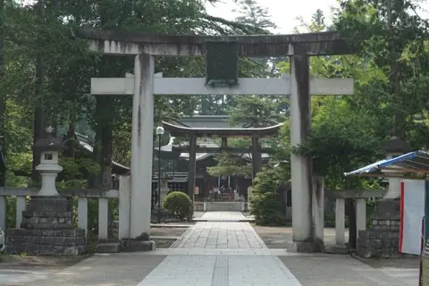
Stay
湯の沢温泉 時の宿すみれ
Yu No Sawa Onsen Tokino Yado Sumire
Onsen lodging in Yonezawa, Yamagata.
ホテルスロービレッジ 米沢
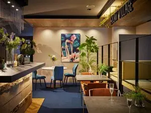
Hoterusuroobirejji Yonezawa
Hotel in Yonezawa, Yamagata.
ホテルセレクトイン米沢
Hoteruserekutoin Yonezawa
Hotel in Yonezawa, Yamagata.
ホテルモントビュー米沢
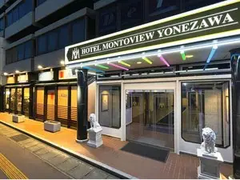
Hoterumontobyuu Yonezawa
Hotel in Yonezawa, Yamagata.
ホテルベネックス米沢
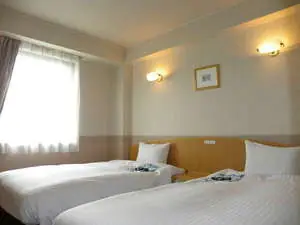
Hoterubenekkusu Yonezawa
Hotel in Yonezawa, Yamagata.
ホテルつたや
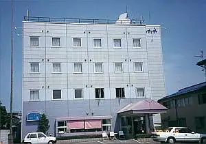
Hoteru Tsutaya
Hotel in Yonezawa, Yamagata.
ホテル・アルファ－ワン米沢
Hoteru Arufa - Wan Yonezawa
Hotel in Yonezawa, Yamagata.
Dining
米沢牛亭 ぐっど
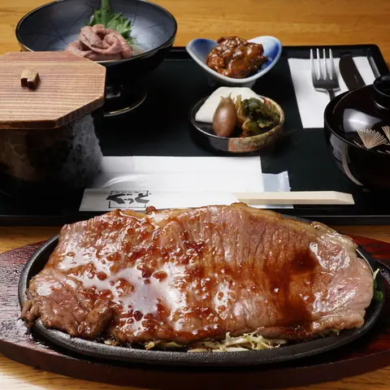
Yonezawa Gyuutei Guddo
Steakhouse in Yonezawa, Yamagata.
米沢牛・焼肉 さかの
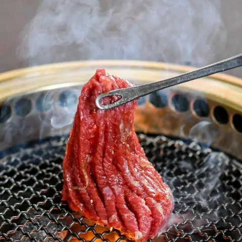
Yonezawa Ushi Yakiniku Sakano
Yakiniku (grilled meat) restaurant in Yonezawa, Yamagata.
そばの店 ひらま
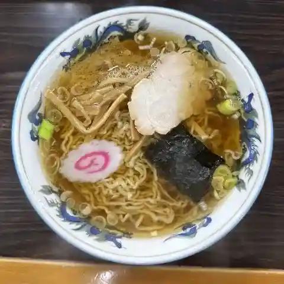
Sobano Mise Hirama
Ramen shop in Yonezawa, Yamagata.
ミートピア
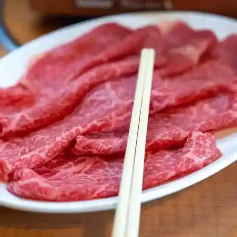
Miitopia
Shokudo diner in Yonezawa, Yamagata.
鳥勝牛肉店
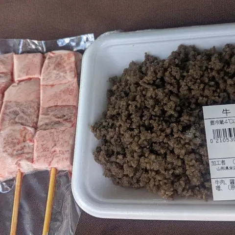
Tori Kachi Gyuuniku Mise
Sukiyaki restaurant in Yonezawa, Yamagata.
時の宿 すみれ
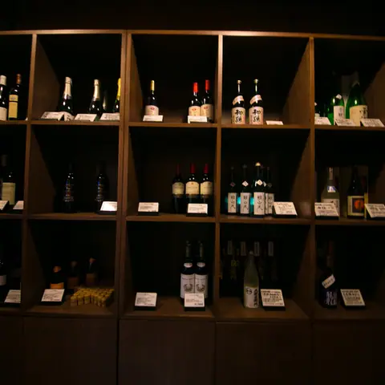
Tokino Yado Sumire
Ryokan restaurant in Yonezawa, Yamagata.
米沢牛 登起波
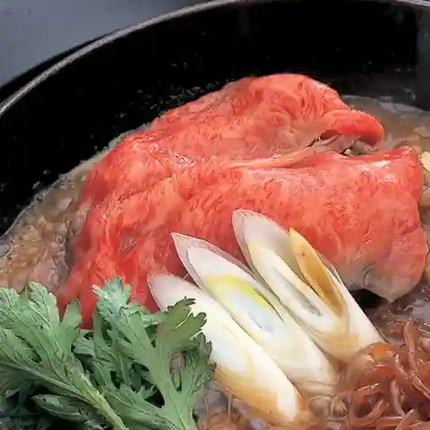
Yonezawa Ushi Tou Ki Nami
Sukiyaki restaurant in Yonezawa, Yamagata.
焼肉みよし
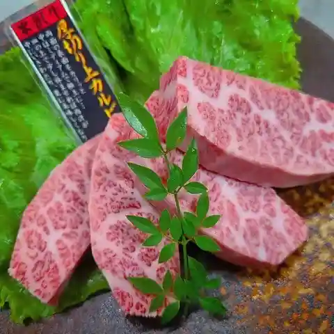
Yakiniku Miyoshi
Yakiniku (grilled meat) restaurant in Yonezawa, Yamagata.
支那そば 熊文
Shina Soba Kuma Bun
Ramen shop in Yonezawa, Yamagata.
炭火焼 てんま 米沢本店
Sumibi Yaki Tenma Yonezawa Honten
Yakiniku (grilled meat) restaurant in Yonezawa, Yamagata.
かわにし食堂
Kawanishi Shokudou
Ramen shop in Yonezawa, Yamagata.
米澤牛DINING べこや
Yonezawa Ushi Dining Bekoya
Yakiniku (grilled meat) restaurant in Yonezawa, Yamagata.
フルーツショップ キヨカ
Furuutsushoppu Kiyoka
Fruit parlour in Yonezawa, Yamagata.
馬場乃町 はやし
Baba No Machi Hayashi
Japanese restaurant in Yonezawa, Yamagata.
米沢牛黄木 金剛閣 焼肉 黄木
Yonezawa Goou Ki Kongou Kaku Yakiniku Ouki
Yakiniku (grilled meat) restaurant in Yonezawa, Yamagata.
登起波分店 登
Tou Ki Nami Bunten Tou
Sukiyaki restaurant in Yonezawa, Yamagata.
新杵屋 本社工場直売店
Shin Kineya Honshakoujou Chokubai Mise
Bento shop in Yonezawa, Yamagata.
米沢牛黄木 牛鍋おおき
Yonezawa Goou Ki Ushinabe Ooki
Beef restaurant in Yonezawa, Yamagata.
立ちそば処 鷹 米沢
Tachi Soba Tokoro Taka Yonezawa
Standing soba counter in Yonezawa, Yamagata.
山大前 やまとや
Yamadai Mae Yamatoya
Ramen shop in Yonezawa, Yamagata.
桂町 さっぽろ
Katsura Machi Sapporo
Shokudo diner in Yonezawa, Yamagata.
お食事 松月
O Shokuji Matsuzuki
Shokudo diner in Yonezawa, Yamagata.
麺や貴伝
Men Ya Takashi Den
Ramen shop in Yonezawa, Yamagata.
粉名屋小太郎
Kona Mei Ya Kotarou
Soba restaurant in Yonezawa, Yamagata.
Sights
Uesugi Jinja Shrine
Receive some good luck at the shrine of Kenshin Uesugi, one of the most powerful warriors of the civil war period
Yonezawa Castle Ruins / Matsugasaki Park
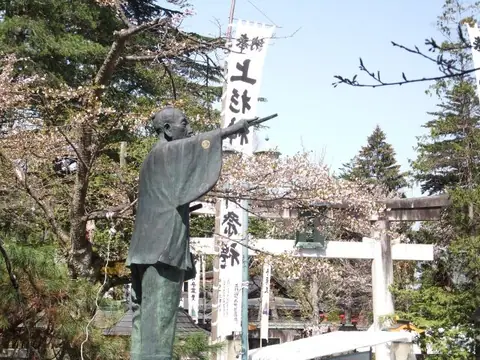
Travel back to Japan’s civil war period at this park with beautiful moats in the hometown of the Uesugi clan!
Namegawaotaki Fall
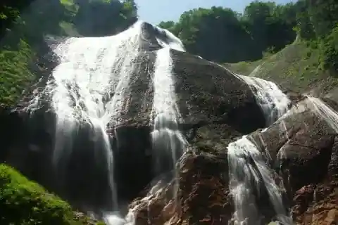
One of Japan's 100 best waterfalls: 80 m high and 40 m wide, among the largest in Tohoku. A viewing platform is about 30 minutes' climb up the trail from Namegawa Onsen.
Kinoene Daikokuten Honzan Hoju-ji Temple
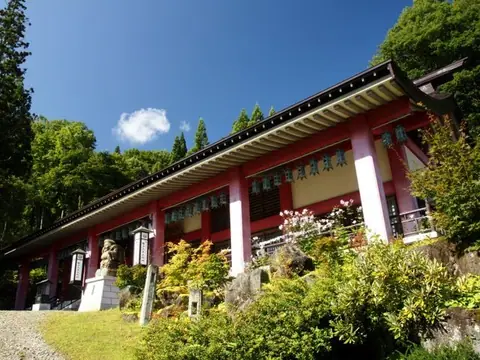
https://yamagatakanko.com/en/attractions/detail_2863.html
Michi-no-Eki Yonezawa
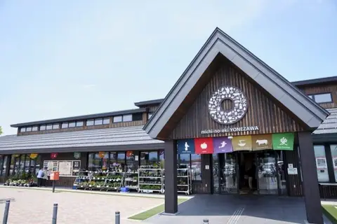
A roadside station styled on the castle town of Yonezawa, with tourist exhibits, a nine-screen video wall of local films and a general tourist information desk that can help with sightseeing and accommodation bookings.
Denkoku No Mori Yonezawa City Uesugi Museum
Denkoku No Mori Yonezawa City Uesugi Museum
Shirabu hot springs
In the hot spring town, there is a nostalgic thatched-roof inn, which makes you feel the history of opening hot springs in late Kamakura era.
Onogawa Onsen
https://yamagatakanko.com/en/festivals/detail_10664.html
Shirabu Falls
A famous waterfall in Shirabu Onsen(Shirabu Hot spring). The majestic appearance with a height of 30m is quite spectacular.
Tengendai Kogen Ski Area
"Tengendai Kogen Ski Resort" is located on the hillside of Mt.
Kasugasan Rinsenji Temple
The Uesugi family temple of the Yonezawa domain, founded by Nagao Yoshikage, grandfather of Uesugi Kenshin. It was first built at the foot of Kasugayama Castle in present-day Joetsu, Niigata, and moved to Yonezawa with the clan.
Experience traditional crafts at Waku Waku Kan
Experience traditional crafts at Waku Waku Kan